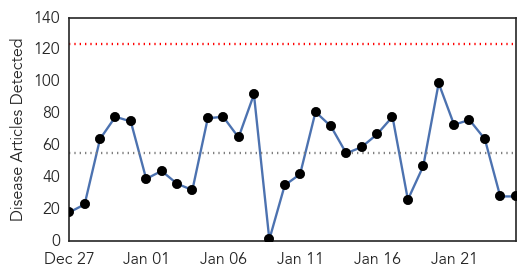
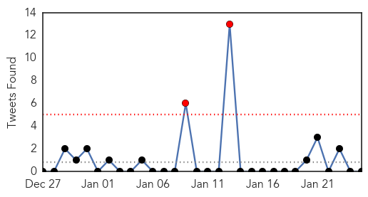
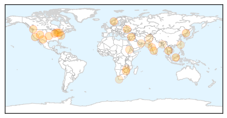
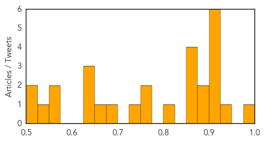

Toggle navigation
Early Warning
Daily Alerts
Unknown
Jan 25, 2015
Compare to:
-
Dengue Fever
Hemmorhagic Fever
Mold/Fungal Infection
Influenza
Meningitis
Pertussis / Whooping Cough
Middle East Respiratory Syndrome
Cholera
Hepatitis
Chikungunya
Yellow Fever
Bubonic Plague
West Nile Virus
Swine Flu
Ebola
Measles
Mumps
30 Day Trends
Web: 0
alerts
, 0
warnings
Twitter: 2
alerts
, 0
warnings
Top Articles:
0.980
Michigan flu outbreak claims first pediatric death
0.944
El Paso flu cases tripled in 2014
0.917
Chicago Tribune
0.917
Chicago Tribune
0.917
Chicago Tribune
0.910
The world windows to Thailand
0.910
The world windows to Thailand
0.909
Utahns with Lyme disease frustrated by illness, lack of care
0.896
CDC warns of apple-borne bacteria outbreak
0.895
Medics needled amid flu fears
0.866
EU summons foreign ministers to emergency meeting on Ukraine
0.866
U.S.-China climate deal does not put pressure on India, says Modi
0.856
DK, Udupi account for 50% of malaria cases
0.851
Flu vaccination is still worthwhile
0.805
Mandatory flu shots: Why one N.J. hospital had 4,400 employees vaccinated
0.758
Antibiotic use by travelers may add to global spread of superbugs
0.755
'Mugabe obsessed with foreign health service'
0.738
Maharashtra reports 13% of new leprosy cases in country
0.684
Displaced residents of North Darfur camp warn of severe water shortages
0.666
Fatal pig virus outbreak slows
0.636
Second phase of National Polio campaign extended
0.630
Bilharzia disease rampant in Zimbabwe
0.629
Bird flu outbreak cause over 2,300 people under observation in Taiwan
0.564
‘Leprosy to plague Pakistan for next 20 years’
0.563
HEALTH: High Drug Prices Hamper Drug-Resistant TB Treatment
0.548
Burn unit at a loss
0.517
Kabul Children's Hospital Faces Overcrowding
0.507
Travelers taking antibiotics may be helping spread of 'superbugs'
Top Tweets:
No tweets found for Jan 25, 2015
Web/News Articles

Tweets

Article Locations

Article Confidences
